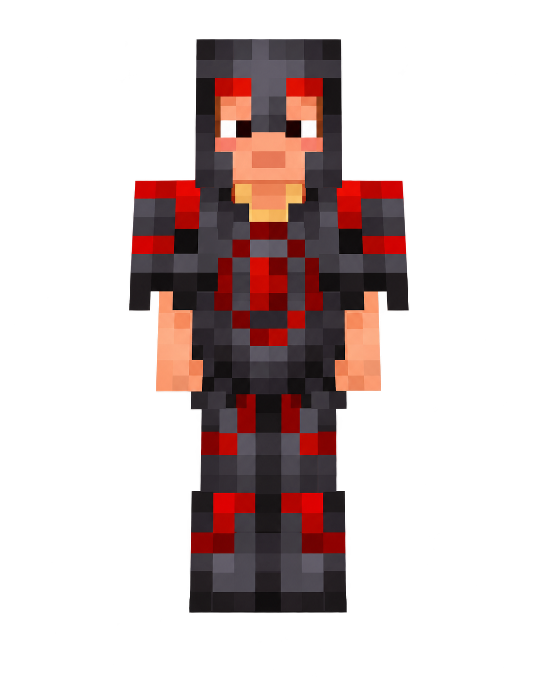

⚔️ Die Fraktionen von Cuberealm
Auf Cuberealm gibt es verschiedene Clans und Teams. Einige Spieler kämpfen gemeinsam, bauen zusammen und bilden Bündnisse mit anderen Fraktionen.
👻 Ghost Clan
Der Ghost Clan ist eine Fraktion unter der Führung von Eric2. Gemeinsam mit Walterfrosch bildet er einen der bekannten Clans von Cuberealm.
Eric2
Eric2
Walterfrosch
Redeye Clan
Ghost

Redeye Clan
Der Redeye Clan besteht aus Theopa und Oskar. Der Name des Clans stammt vom Eye-Armor-Trim. In Kombination mit Redstone entsteht ein auffälliges rotes Auge auf der Rüstung.
Theopa & Oskar
Theopa
Oskar
Ghost Clan
Eye-Armor-Trim + Redstone
🤝 Bündnis
Der Ghost Clan und der Redeye Clan sind miteinander verbündet.